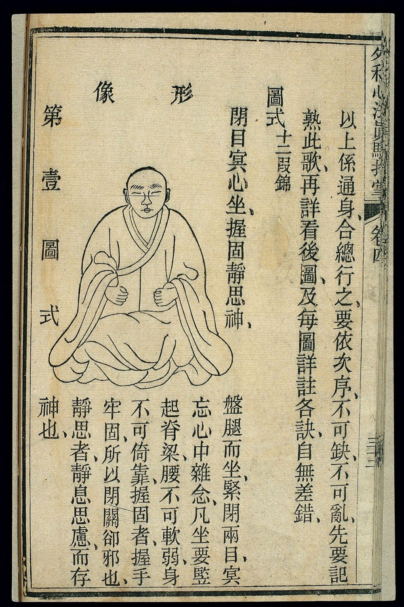
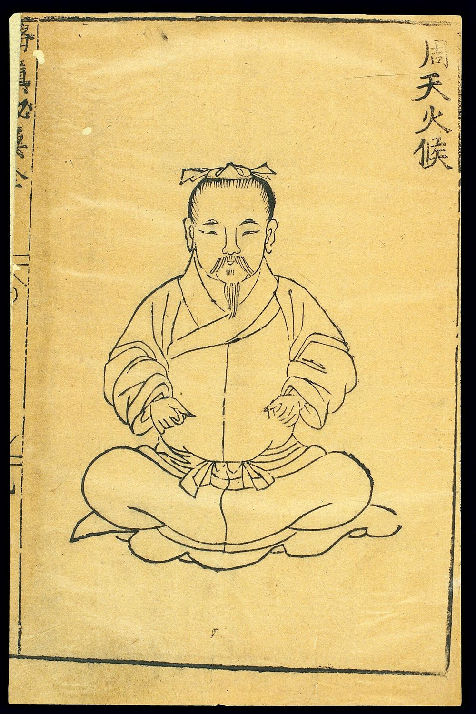
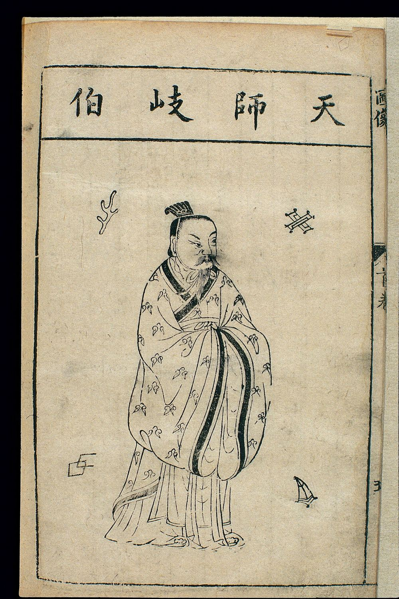
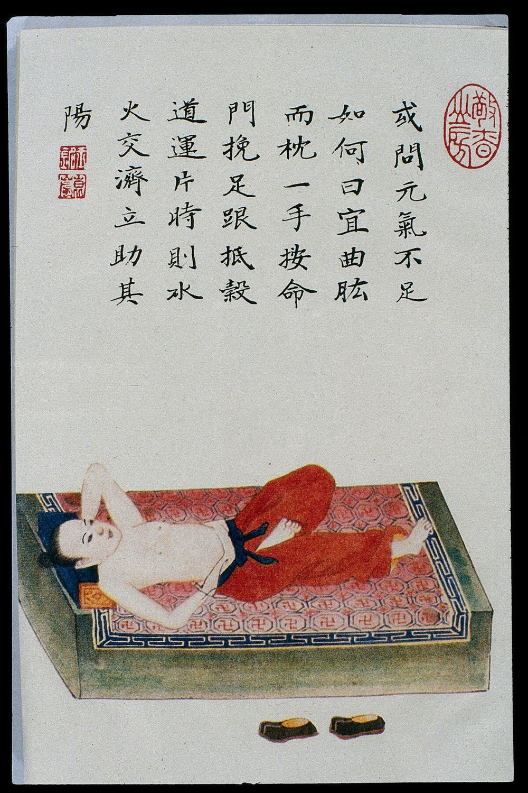
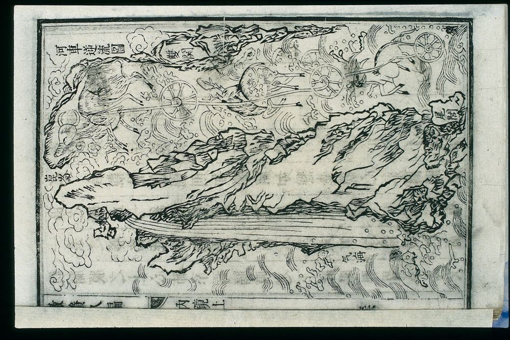
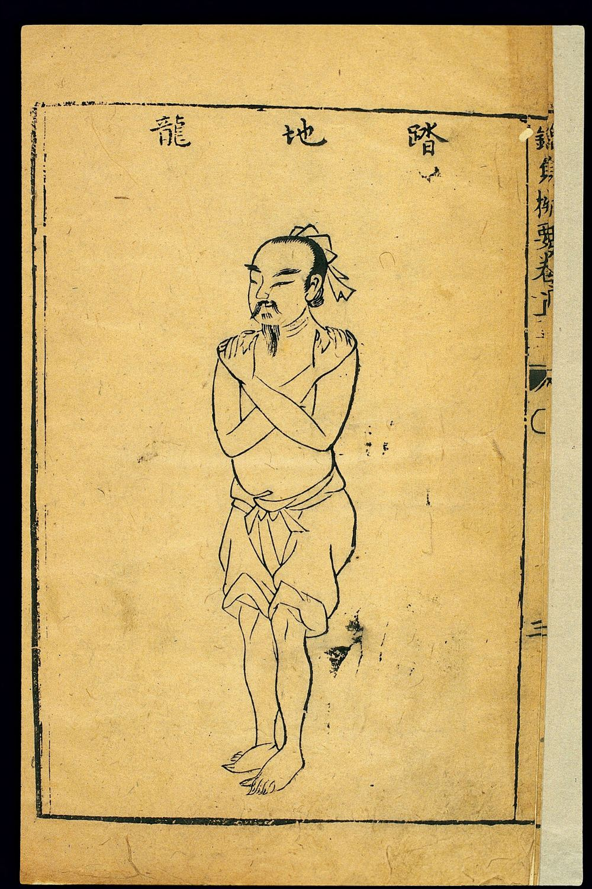
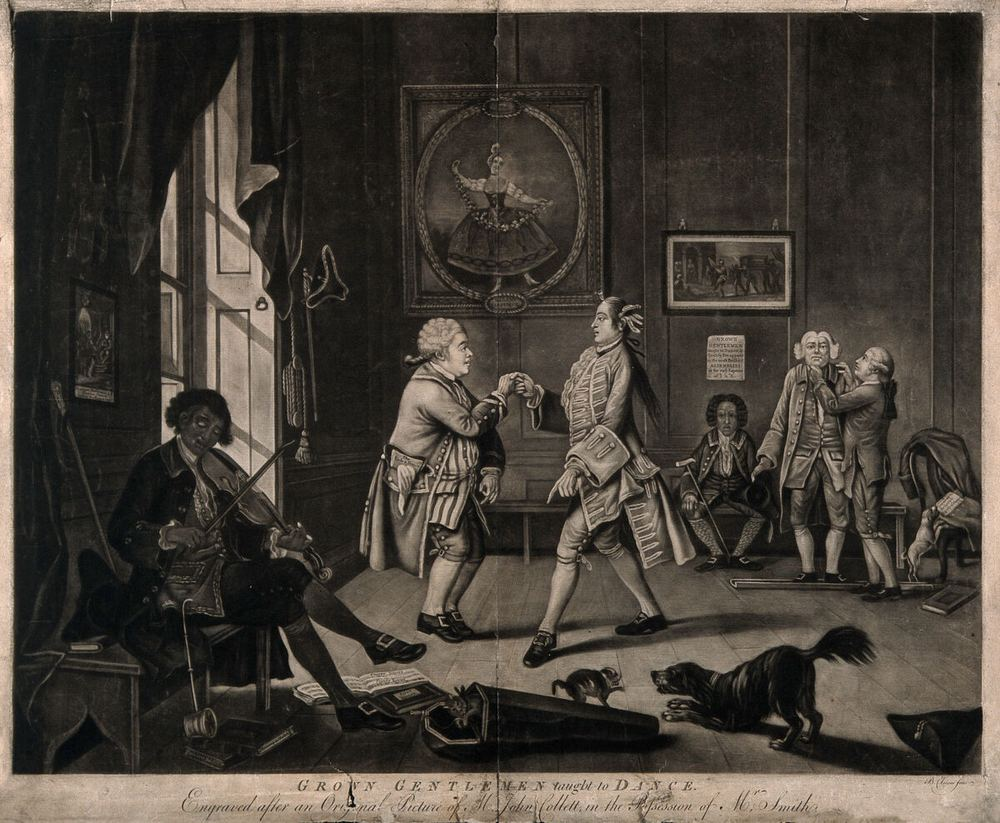
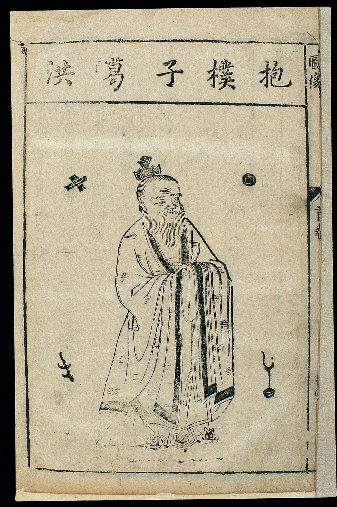
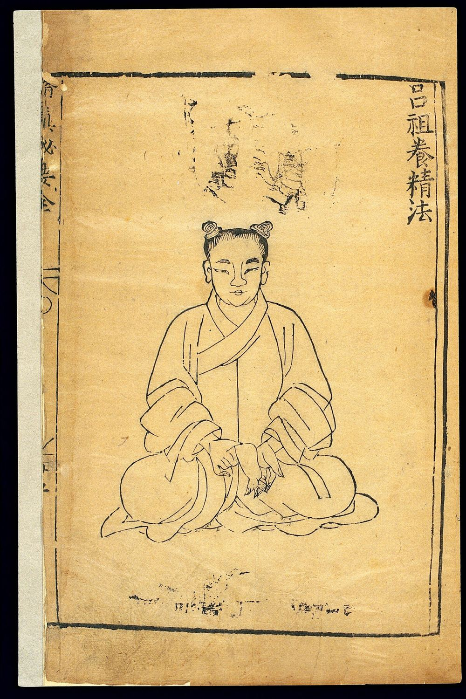

觀相識人自學講義 第五冊
修心養相
相隨心轉：心念、作息、儀態、利他
與一份 21 天練習計畫（全套總結）
原典：《月波洞中記》《人倫大統賦》《冰鑑》《黃帝內經·素問》《傳習錄》《莊子》《抱朴子》
本冊為自學講義，內容自行撰寫；不是任何付費課程的講義或摘要。
傳統相法用於理解文化與自我觀照，不用於判斷他人的品格與命運。
目錄
- 本冊導讀：把「補運」說清楚
- 補運法之一：心念調整——心者，形之主
- 補運法之二：作息與氣色——食飲有節，起居有常
- 補運法之三：儀態與姿態——容貴整
- 補運法之四：利他與人脈——一寸之心
- 21 天練習計畫與自我記錄表
- 全套總結：五冊回顧、觀相識人的正確打開方式
- 常見誤解
- 反思題
- 延伸閱讀
- 圖片來源
每段原典精讀依序為：原文（逐字錄自維基文庫本）→ 字詞註 → 白話（本講義自譯）→ 解說。每個主題結尾用三欄表標出「相書原說／合理成分／沒有證據或有風險的部分」。
一、本冊導讀：把「補運」說清楚
前四冊我們學了相書怎麼「看」：五行形相、三停十二宮、手掌紋線，以及這些說法放到職場、感情、健康上會怎樣被使用。第五冊換一個方向：不是看別人，而是照顧自己。
民間流傳一種說法：面相是天生的，但「相隨心轉」，心念一改，相也會跟著改，連帶運勢也變好。坊間有許多「改運」「補運」的方法，從點痣、整形到配戴飾物都有。這本講義要做的事很單純：把這個說法裡站得住的部分挑出來，把站不住的部分老實說出來，然後變成每天做得到的練習。
先講結論：
- 骨相、五官形狀、膚色底子大多是遺傳與年齡決定的，不會因為心念而改變，也不需要改變——它們與一個人的品格無關。
- 神情、氣色、姿態、說話的方式、別人和你相處後的感覺，確實會隨睡眠、情緒、習慣與人際行為而變。這部分是「可以練的相」。
- 所謂「運氣好轉」，在本講義裡只指一件可驗證的事：當你睡得夠、情緒穩、待人可靠，別人更願意和你合作，你也更有餘裕處理事情。我們不主張任何練習能改變命數、帶來財富或避開災禍。
圖 1 四個日常「補運法」總覽（本講義自繪）。每一格上排是相書的說法，綠字是本講義把它翻譯成的可驗證做法，最下一行是你實際可能觀察到的變化。中心那句話是全冊的立場：我們練的是習慣與待人方式，不是去改天生的五官。
為什麼「相隨心轉」有一部分是對的
把「相」拆成兩層就容易懂了。第一層是結構：骨骼、五官比例、膚色底子。第二層是狀態：此刻的表情、眼神是否有精神、膚色是否蒼白暗沉、身體是縮著還是舒展、說話是急是緩。相書其實也分這兩層——《冰鑑》把「神骨」「容貌」看作底子，把「情態」「氣色」看作會變動的部分，稱情態是「神之餘」、氣色是「運」。
第二層會隨生活改變，這有不少研究支持：睡眠剝奪會讓人看起來更疲倦、膚色更蒼白（第三章詳述）；長年反覆做同一種表情，相關的表情紋會比較深（這也是皮膚科用肉毒桿菌素放鬆特定表情肌來淡化動態皺紋的原理）；情緒會改變呼吸、肌肉緊張與姿勢。這些變化是真的，但它們反映的是狀態與習慣，不是品格；更不是命運。
圖 2 相隨心轉循環圖（本講義自繪）。心念影響行為與作息，行為與作息改變神情和氣色，外在狀態影響別人怎麼回應你，別人的回應又回頭影響心情。這個迴圈可以往好的方向轉，也可以往壞的方向轉；四個補運法分別從四個環節介入。
本冊的三層判讀
| 層次 | 相書原說 | 合理成分 | 沒有證據或有風險 |
|---|
| 總說 | 心為形之主；修德則祿永；氣色隨心志而變。 | 情緒、睡眠、生活習慣會影響表情、膚色、姿態，也影響人際互動。 | 「心好相就好看」「長相不好代表心不好」都沒有證據；用相貌推論品德會加深偏見。 |
| 補運 | 修心、積德、調氣色可以轉運。 | 規律作息、穩定情緒與可靠的待人方式，會讓工作與關係更順。 | 宣稱點痣、整形、配飾能改命，沒有證據；為此花大錢或延誤就醫是真正的風險。 |
二、補運法之一：心念調整——心者，形之主
民間常說「相由心生」，但這四個字在本講義手邊的相書檔案裡找不到原句；另一句流傳很廣的「有心無相，相隨心生；有相無心，相隨心滅」常被說是出自《麻衣神相》或陳摶，本講義未能核對原典，所以只當作「傳統常見說法」。不過宋代相書《月波洞中記》確實有一段意思很接近的話，而且說得更細。
2.1《月波洞中記》：神宅於心
蓋形麗於骨，而神宅於心。此是其主不必廣壽也。經雲：心者，形之主，形者，心之器也。神主其心，心主其形，形體端足，魂魄自全，四體屈伸，神精荒散，君臣相合，四支相助，自然之理也。能知神在於心，心能清淨，則福自生矣。《月波洞中記·卷上·冥度》
- 麗
- 附著。「形麗於骨」：外形依附在骨架上。
- 宅
- 居住。「神宅於心」：神采住在心裡。
- 經雲
- 「經上說」。「雲」同「云」，維基文庫本如此。引的是哪部經，原文未說明。
- 器
- 容器、工具。
- 君臣相合
- 以君（心）臣（形體）比喻身心配合。
- 清淨
- 不被雜念、躁動攪亂。
外形依附在骨頭上，而神采住在心裡。經書說：心是形體的主人，形體是心使用的器具。神主宰心，心主宰形體；形體端正完備，精神就安穩……就像君臣相合、四肢互相配合，這是自然的道理。懂得神采其實在心，心能清靜，福氣自然就產生了。
解說：這段是整套相法裡最接近「相隨心轉」的原典根據。值得注意兩點。第一，它把「神」放在「形」之上——相書自己就承認，光看骨架不夠，要看那個人的精神狀態。第二，它說「心能清淨，則福自生」，這裡的「福」在相書語境裡包含富貴，我們不照單全收；但如果把「福」理解為「做事不慌亂、人際不躁進所帶來的順利」，那它說的就是一件日常可以觀察的事。同書〈心隱〉還有一句很有分量的話：「夫欲相之，必先試之性行，相外乃得其真。」意思是：要看一個人，先考察他的性情與行為，在相貌之外才得到真相。連相書作者都說要先看行為，這正是本套講義反覆強調的立場。
2.2《人倫大統賦》：心志一動，氣色隨之
至於氣色，通於五臟之分，心爲身之君，志爲氣之帥。心志有動氣必從，氣從則神知，神知則色見，如蜂排沬，蠶吐絲，隱現無常。《人倫大統賦·原序》（元·薛延年）
- 志爲氣之帥
- 化用《孟子·公孫丑上》論「志」與「氣」的說法（《孟子》原文不在本講義的原典檔案中，故不直接引錄）。意志統領身體的氣。
- 見
- 音「現」，顯現。
- 如蜂排沬
- 像蜂吐出泡沫、蠶吐絲一樣，一點一點地冒出來。
- 隱現無常
- 時隱時現，沒有固定。
至於氣色，與五臟相通。心是身體的君主，意志是氣的統帥。心志一有變動，氣就跟著動；氣動了，神就有感應；神有感應，臉色就顯露出來——像蜂吐沫、蠶吐絲一樣細細地浮現，時隱時現，沒有定準。
解說：這段話放到今天，最貼切的對應是「情緒會表現在臉上」。生氣時臉紅、驚嚇時臉色發白、長期焦慮時眉間緊繃——這些都是可觀察的生理反應。但請注意序文自己的用語：「隱現無常」。氣色變化快、受光線影響大、個人差異大，所以相書也說「非老於是者不能」。對我們而言，更實用的讀法是反過來用：與其去讀別人的氣色，不如注意自己的心志波動怎樣跑到臉上和身體上。
同書〈卷上〉開篇也有一句：「若賦性粗惡禍必及，如修德惕厲祿永終。」（性情粗暴惡劣，災禍必然到來；如果修養德行、保持警惕自省，福祿就能長久。）這是相書在一堆以骨相斷貴賤的論斷之中，替「修養」留下的位置。
2.3《黃帝內經·素問》：情緒與身體
余知百病生於氣也，怒則氣上，喜則氣緩，悲則氣消，恐則氣下，寒則氣收，炅則氣泄，驚則氣亂，勞則氣耗，思則氣結，九氣不同，何病之生。《黃帝內經·素問·舉痛論篇第三十九》
- 炅
- 音「炯」，熱。
- 氣上／氣下
- 古人描述情緒造成的身體感覺：怒時氣往上衝，恐時氣往下沉。
- 九氣
- 怒、喜、悲、恐、寒、炅、驚、勞、思九種狀態對氣的影響。
我知道許多疾病都由氣的失調而生：發怒則氣上逆，喜樂則氣舒緩，悲傷則氣消散，恐懼則氣下沉，受寒則氣收斂，受熱則氣外泄，驚嚇則氣紊亂，勞累則氣耗損，思慮過度則氣鬱結。九種情況各不相同，會生出什麼病呢？
解說：「氣」的理論本身無法用現代生理學直接對應，但這段話對身體感覺的描述很準：生氣時血往頭上湧、害怕時腿軟、憂思時胸口悶、胃口差。把它當作一份「情緒的身體地圖」來用：第四週練習裡，我們會請你在情緒上來時，先辨認自己是九氣中的哪一種，再決定怎麼回應。能說出情緒的名稱，本身就是調節情緒的第一步。
2.4《冰鑑》：一身精神，具乎兩目
一身精神，具乎兩目；一身骨相，具乎面部。……相家論神，有清濁之辨。清濁易辨，邪正難辨。欲辨邪正，先觀動靜。靜若含珠，動若水發；靜若無人，動若赴敵。此為澄清到底。《冰鑑·神骨章第一》
- 具
- 齊備、集中於。
- 含珠
- 像含著珍珠，內斂而有光。
- 水發
- 像泉水湧出，流暢而有力。
- 靜若無人
- 安靜時像旁邊沒有人一樣不受干擾。
- 動若赴敵
- 行動時像奔赴戰陣般專注果決。
- 澄清到底
- 徹底清明。
一個人的精神，都集中在雙眼；一個人的骨相，都集中在臉上。……相家論「神」，有清與濁的分別。清濁容易分，邪正難分。要分邪正，先看動與靜：靜的時候像含著珍珠般內斂有光，動的時候像泉水湧出般流暢；靜的時候不受外界打擾，動的時候全神貫注——這才是徹底的清明。
解說：《冰鑑》作者是誰有爭議：維基文庫本署名「羅祖真人」，坊間常說是曾國藩所作，但沒有可靠證據，本講義不採信任何一方。這段話若當作「識人術」，從眼神判斷人的邪正，並沒有研究支持；但若當作自我修養的目標，它描述的其實是一種我們都認得的狀態：安靜時不東張西望、不被手機拉走；做事時專心投入。這種狀態可以練習。現代研究中，正念（mindfulness）訓練能小幅改善焦慮、憂鬱等症狀，證據強度屬中等（Goyal 等人 2014 年在 JAMA Internal Medicine 的統合分析），但它不是萬靈丹，對「壓力」「注意力」的證據較弱，效果也因人而異。

圖 3 刻本「十二段錦」第一圖式，題「閉目冥心坐，握固靜思神」。旁註要人盤腿而坐、閉目、忘卻心中雜念，「凡坐要豎起脊梁，腰不可軟弱，身不可倚靠」。古人把收心與端正坐姿放在同一個動作裡，正好對應本冊的「心念」與「儀態」兩法。來源：Wellcome Collection，Public Domain Mark，works/yy9yrpkk

圖 4 明代刻本導引圖，題「周天火候」：一位束髮長鬚的人盤腿端坐、雙手置於腹前。「周天」「火候」是內丹術語，其功效說法本講義不採；但畫中人肩背舒展、神情安定的樣子，可以當作「靜若含珠」的視覺參考。來源：Wellcome Collection，Public Domain Mark，works/s8t8xqms
2.5《傳習錄》：心即理，有深愛者必有和氣
《禮記》言：『孝子之有深愛者，必有和氣。有和氣者，必有愉色。有愉色者，必有婉容。』須是有個『深愛』做根，便自然如此。《傳習錄·卷上》（徐愛錄，王陽明論「心即理」一段之末）
- 和氣
- 平和的氣息與態度。
- 愉色
- 愉悅的臉色。
- 婉容
- 柔順和善的儀容。
- 做根
- 作為根本。陽明在前文以樹作比喻：「誠孝的心便是根，許多條件便是枝葉。」
《禮記》說：對父母有深切愛意的孝子，一定有平和的氣息；有平和氣息的人，一定有愉悅的臉色；有愉悅臉色的人，一定有和順的儀容。一定要有「深愛」作為根本，這些才會自然呈現。
解說：這段話是全冊最重要的一句話之一，因為它清楚列出一條「由內到外」的鏈：深愛 → 和氣 → 愉色 → 婉容。這幾乎就是「相隨心轉」最好的古典表述。王陽明的重點在於「根」：不是先去練一張和善的臉，而是先有真實的關心，臉色和儀容才會自然跟上。現代研究也提醒同一件事：在服務業被要求「一直微笑」、內心卻不認同的「表層扮演」（surface acting），長期與情緒耗竭有關（Grandey 2000 以來一系列情緒勞動研究）。所以本冊的儀態練習一律以「真實的關注」為前提，不教你假笑。
2.6《傳習錄》：人須在事上磨
問：「靜時亦覺意思好，才遇事便不同，如何？」
先生曰：「是徒知養靜，而不用克己工夫也。如此，臨事便要傾倒。人須在事上磨，方立得住，方能靜亦定，動亦定。」《傳習錄·卷上》第 23 條
- 意思
- 心境、狀態。
- 養靜
- 靜坐涵養。
- 克己
- 克制私欲、調整自己。
- 傾倒
- 站不住、垮掉。
- 事上磨
- 在實際事務中磨練。卷下另一處作「人須在事上磨鍊，做功夫乃有益。若只好靜，遇事便亂，終無長進」。
有人問：「安靜時覺得心境很好，一遇到事情就不一樣了，怎麼辦？」先生說：「這是只懂得靜養，卻沒有下克制自己的功夫。這樣一遇到事情就會垮掉。人必須在事情上磨練，才站得住，才能安靜時心定，做事時心也定。」
解說：這是本冊練習設計的核心。很多人靜坐時很平靜，一開會、一塞車、一被批評就破功。陽明的回答很務實：靜坐不是終點，真正的練習場是「遇事時」。所以 21 天計畫每天都有一欄「遇事時」，而不只是早晚各做一件好事。下圖是把「事上磨」拆成三個動作的簡化版。
圖 5 「事上磨」三步：停、覺、選（本講義自繪）。「停」用一次拉長吐氣的呼吸製造空檔；「覺」借用〈舉痛論〉的九氣替情緒命名；「選」才是真正的功夫——在這個空檔裡決定要怎麼說、怎麼做。這三步不保證每次都成功，重點是一次比一次早一點停下來。
2.7《莊子·人間世》：心齋
回曰：「敢問心齋？」仲尼曰：「若一志，无聽之以耳而聽之以心，无聽之以心而聽之以氣。聽止於耳，心止於符。氣也者，虛而待物者也。唯道集虛。虛者，心齋也。」《莊子·人間世》
- 心齋
- 「心的齋戒」，相對於不喝酒、不吃葷的「祭祀之齋」。
- 若一志
- 你要專一心志。「若」，你。
- 聽止於耳
- 耳朵的作用只到聽見聲音為止。
- 心止於符
- 心的作用只到與外物相合（形成判斷）為止。
- 虛而待物
- 空明地迎接事物，不預先塞滿成見。
顏回問：「請問什麼是心齋？」孔子說：「你要專一心志：不要只用耳朵去聽，而要用心去體會；不要只用心去體會，而要用氣去感應。耳朵只能聽到聲音，心只能做出判斷；氣則是空明而能容納萬物的。道只會聚集在空明之中。這種空明，就是心齋。」
解說：這段話出現的情境很重要：顏回要去勸說一位剛愎的衛國國君，孔子要他先「齋心」——放下急於表現、急於糾正對方的成見，才可能真正聽懂對方。用在觀人上，這是一記當頭棒喝：我們看人時最常犯的錯，就是心裡已經「符」（下了判斷）了，才開始看。面相的標籤（「這人顴骨高，一定強勢」）正是一種提前的「符」。心齋的現代版本可以很簡單：對話時，先把「我覺得他是怎樣的人」放到一邊，專心聽完他說什麼。
2.8《莊子·德充符》：遊於形骸之內
〈德充符〉是《莊子》裡一整篇寫「外形殘缺或醜陋、德行卻充實」之人的文章，對一套以「看外貌」為主題的講義來說，它是最好的解毒劑。下面這段是受過刖刑（被砍去一足）的申徒嘉，回應同學鄭子產的輕視。
人以其全足，笑吾不全足者，衆矣，我怫然而怒，而適先生之所，則廢然而反，不知先生之洗我以善邪？吾與夫子遊，十九年矣，而未嘗知吾介者也。今子與我遊於形骸之內，而子索我於形骸之外，不亦過乎？」子產蹵然，改容更貌，曰：「子无乃稱！」《莊子·德充符》（「介」字下維基文庫本有校記「一作『兀』」，此處略去）
- 全足
- 雙腳健全。
- 怫然
- 怫，音「佛」，憤怒的樣子。
- 廢然而反
- 怒氣消散地回去。
- 介者
- 受刖刑而只剩一足的人。
- 遊於形骸之內
- 以內在的德行、精神相交往。
- 索我於形骸之外
- 從外形上來要求、衡量我。
- 蹵然
- 蹵，同「蹴」，不安、慚愧的樣子。
- 子无乃稱
- 請您別再說了。
「拿自己雙腳健全來笑我少一隻腳的人很多，我曾經氣得不得了；可是一到老師那裡，怒氣就消了回來——不知道是不是老師用善洗滌了我？我跟老師相處十九年，他從沒讓我覺得自己是個殘缺的人。現在你和我是在內在德行上交往的同學，你卻用外形來衡量我，不是太過分了嗎？」子產聽了很慚愧，臉色都變了，說：「請你別再說了。」
解說：這段話裡有兩張臉的變化。申徒嘉在老師那裡「廢然而反」，怒氣消散；鄭子產被點醒後「改容更貌」。改變的都是神情，起因都是心——前者是被善意對待，後者是意識到自己的傲慢。這才是「相隨心轉」最準確的意思。同篇另一段說得更直接：「故德有所長，而形有所忘。」德行突出的人，別人會忘掉他的外形。學了四冊相法之後，請一定記得這一句：外貌、身體特徵、疾病與障礙，都不是品格的記號。
2.9 心念調整的三層判讀與做法
| 主題 | 相書原說 | 合理成分 | 沒有證據或有風險 |
|---|
| 心與神 | 神宅於心，心清淨則福生；心志動則氣色見。 | 情緒會即時反映在表情、膚色（臉紅、發白）、呼吸與肌肉緊張上；習慣性表情會留下表情紋。 | 從眼神、氣色判斷一個人「邪正」，沒有研究支持；把別人的疲態當成心術不正，是冤枉人。 |
| 表情回饋 | （相書無此說；《傳習錄》說要先有深愛做根。） | 大型多國合作研究（Many Smiles Collaboration，Coles 等，2022）發現刻意微笑對當下自評快樂有小幅提升。 | 著名的「咬筆讓人變快樂」實驗在 17 個實驗室的預先登記重複研究中沒有重現（Wagenmakers 等，2016）；長期強顏歡笑反而有耗竭風險。 |
練習：每日三分鐘「止水」
早上坐在椅子上，雙腳踩地，背離開椅背、自然豎直（參考圖 3「凡坐要豎起脊梁」）。閉眼或垂視，注意呼吸的進出。念頭冒出來時，在心裡說一聲「想」，再回到呼吸。三分鐘就好，計時器響了就結束。〈德充符〉說：「人莫鑑於流水，而鑑於止水。」（人不會拿流動的水當鏡子，而是拿靜止的水。）這三分鐘的目的不是「放空」，而是讓你在一天開始前，先看清楚自己此刻的狀態。
三、補運法之二：作息與氣色——食飲有節，起居有常
第二冊講過「氣色神采」，第四冊提醒過不要把氣色當成診斷。本章換個角度：氣色既然會變，就有一部分是自己照顧得到的。這也是四個補運法中，現代證據最扎實的一個。
3.1《冰鑑·氣色》：面部如命，氣色如運
人以氣為主，於內為精神，於外為氣色。有終身之氣色，少淡、長明、壯艷、老素是也。有一年之氣色，春青、夏紅、秋黃、冬白是也。有一月之氣色，朔後森發，望後隱躍是也。有一日之氣色，早透、晝滿、晚停、暮靜是也。《冰鑑·氣色章第七》
- 少淡、長明、壯艷、老素
- 幼年淡、青年明亮、壯年豔麗、老年素淨。
- 朔、望
- 農曆初一、十五。
- 森發、隱躍
- 旺盛地顯露；隱約地跳動。
- 早透、晝滿、晚停、暮靜
- 早晨透出、白天飽滿、傍晚停歇、入夜安靜。
人以氣為根本：在內表現為精神，在外表現為氣色。氣色有一輩子的變化：小時候淡、青年時明亮、壯年時豔麗、老年時素淨；有一年的變化：春青、夏紅、秋黃、冬白；有一月的變化：初一之後旺盛，十五之後隱約；也有一天的變化：早上透出，白天飽滿，傍晚停歇，夜裡安靜。
解說：相書接著用這些氣色去斷科名、財利、生子，那些我們不採。但這段描述本身有一個很好的觀察：氣色有節律，跟年齡、季節、一天的時辰有關。現代人可以把它重新理解為：膚色會受年齡、日曬季節、睡眠與晝夜節律影響。同章還列出幾種「青」「白」：「心事憂勞，青如凝墨……酒色憊倦，白如臥羊」——把憂勞、縱酒、疲憊與臉色連在一起，這部分倒是相當貼近日常經驗。
3.2《素問·上古天真論》精讀
岐伯對曰：「上古之人，其知道者，法於陰陽，和於術數，食飲有節，起居有常，不妄作勞，故能形與神俱，而盡終其天年，度百歲乃去。
今時之人不然也，以酒為漿，以妄為常，醉以入房，以欲竭其精，以耗散其真，不知持滿，不時御神，務快其心，逆於生樂，起居無節，故半百而衰也。《黃帝內經·素問·上古天真論篇第一》
- 法於陰陽
- 效法自然的陰陽變化（如晝夜、寒暑）。
- 和於術數
- 調和於養生的方法。術數在此指導引、按蹻等養生技術。
- 不妄作勞
- 不違背常規地過度勞累。
- 形與神俱
- 身體與精神同在、協調。
- 天年
- 自然應有的壽命。
- 以酒為漿
- 把酒當成日常飲料。
- 以妄為常
- 把胡亂的生活當成常態。
- 持滿
- 保持充盈，不使耗盡。
- 不時御神
- 不懂得適時調養精神。
- 務快其心
- 只求一時痛快。
岐伯回答：「上古懂得養生之道的人，順應自然的陰陽變化，用適當的方法調養身體，飲食有節制，作息有規律，不胡亂過度勞累，所以身體和精神能夠協調一致，活到應有的壽數，過了百歲才離世。現在的人不是這樣：把酒當水喝，把亂來當正常，喝醉了還縱欲，耗盡精氣、散失真元，不懂得保持充盈，不懂得適時調養精神，只求心裡痛快，違背了真正的養生之樂，作息沒有節度，所以五十歲就衰老了。」
解說：「食飲有節，起居有常，不妄作勞」十二個字，幾乎就是現代健康建議的骨架：規律飲食、規律作息、避免過勞。「百歲」是理想化說法，不必當真；但「半百而衰」的原因清單——酗酒、作息紊亂、透支、追求一時痛快——今天的醫學也會同意。同篇接著說：「恬淡虛無，真氣從之；精神內守，病安從來？」把情緒平穩也列入養生，與上一章的心念調整連成一氣。

圖 6 刻本名醫像中的「天師岐伯」：一位長袍寬袖、蓄鬚的長者側身而立。《素問》多以黃帝問、岐伯答的形式寫成，上面那段「食飲有節，起居有常」就是岐伯的回答。畫像是後人想像，不是寫真。來源：Wellcome Collection，Public Domain Mark，works/jyqqb9sq

圖 7 十九世紀彩繪導引冊頁：一人赤上身側臥在花紋褥墊上，曲臂為枕，床前擺著一雙鞋。題字問「元氣不足如何」，答以「宜曲肱而枕」等臥姿。其「水火交濟」之說屬傳統養生理論，本講義不作功效保證；放在這裡，是提醒古人也把「好好躺下休息」當作一門功夫。來源：Wellcome Collection，Public Domain Mark，works/vdy94rtj
3.3《素問·四氣調神大論》精讀：起居隨四時
春三月，此謂發陳。天地俱生，萬物以榮。夜臥早起，廣步於庭，被髮緩形，以使志生，生而勿殺，予而勿奪，賞而勿罰。此春氣之應養生之道也；逆之則傷肝，夏為寒變，奉長者少。《黃帝內經·素問·四氣調神大論篇第二》
- 發陳
- 推陳出新，萬物生發。
- 廣步於庭
- 在庭院中大步散步。
- 被髮緩形
- 披散頭髮，放鬆形體（不受束縛）。
- 以使志生
- 讓心志舒展生發。
- 生而勿殺……
- 心態上要多給予、多鼓勵，少剝奪、少懲罰。
- 奉長者少
- 供給夏季「長養」的基礎就不足。
春天三個月，叫做「發陳」，天地一起生發，萬物欣欣向榮。這時應該晚一點睡、早一點起，在庭院裡大步散步，披開頭髮、放鬆身體，讓心志舒展；心態上要生養而不殺伐，給予而不奪取，獎賞而不懲罰。這是順應春氣的養生之道；違反它就會傷肝，到夏天容易出現寒性的病變，供給夏季長養的基礎也會不足。
解說：這篇值得注意的地方是：它講「起居」的同時一定講「志」——春天「以使志生」，夏天「使志無怒」，秋天「使志安寧」，冬天「使志若伏若匿」。作息與心境是一起調的。四季的原文要點整理如下（全部摘自同篇）：
| 季節 | 原文的作息 | 原文的心境 | 現代可以怎麼用 |
|---|
| 春「發陳」 | 夜臥早起，廣步於庭 | 以使志生；生而勿殺，予而勿奪 | 天亮得早，順勢早起，戶外走路；多給別人鼓勵。 |
| 夏「蕃秀」 | 夜臥早起，無厭於日 | 使志無怒；若所愛在外 | 白天多活動，但炎熱時注意補水與防曬；天熱易煩，提醒自己別動怒。 |
| 秋「容平」 | 早臥早起，與雞俱興 | 使志安寧，收斂神氣 | 開始提早上床；收心，整理今年的計畫。 |
| 冬「閉藏」 | 早臥晚起，必待日光 | 使志若伏若匿；去寒就溫 | 天亮得晚，睡眠可以多一些；保暖，起床後設法接觸日光。 |
「逆之則傷肝」「冬為飱泄」這類臟腑對應屬於傳統醫學理論體系，本講義不作驗證，也不建議據此自我診斷。但「隨季節調整作息、白天接觸日光、晚上早點休息」與現代睡眠醫學對晝夜節律的理解方向一致：早晨的光照有助於穩定生理時鐘。
3.4 現代研究怎麼說：睡眠、飲食、日曬與臉
以下列出與「氣色」直接相關、本講義認為較可靠的研究，並標明它們說了什麼、沒說什麼。
- 睡眠不足會讓人「看起來」比較疲倦、不健康。瑞典研究者讓受試者在正常睡眠與一夜少睡後各拍一次照片，請陌生人評分：少睡後的照片被評為較疲倦、較不健康、較不吸引人（Axelsson 等，2010，BMJ）。後續研究找出具體線索：眼皮下垂、眼睛發紅與浮腫、黑眼圈、膚色較蒼白、嘴角下垂等（Sundelin 等，2013，Sleep）。——沒說的：這是一夜之間的短期變化，不代表長相永久改變。
- 蔬果攝取與膚色。英國研究追蹤受試者數週，發現蔬果攝取增加者的膚色變得略偏黃、偏紅（類胡蘿蔔素沉積），而且這種變化被他人評為「看起來更健康」（Whitehead 等，2012，PLoS ONE；Stephen 等，2011）。——沒說的：效果細微，需要數週；也不代表某種膚色比較「好」，膚色深淺本身不是健康指標。
- 日曬與皮膚老化。澳洲一項隨機對照試驗發現，規律每天擦防曬的成年人，約四年半後皮膚光老化程度較低（Hughes 等，2013，Annals of Internal Medicine）。吸菸與皮膚老化的關聯也有大量研究支持。
- 睡多少才夠？美國睡眠醫學會與睡眠研究學會的共識建議成年人規律睡眠 7 小時以上（Watson 等，2015）。規律運動方面，世界衛生組織 2020 年指引建議成年人每週 150–300 分鐘中等強度身體活動。
對照《素問·宣明五氣篇》的「五勞所傷︰久視傷血，久臥傷氣，久坐傷肉，久立傷骨，久行傷筋」，古人已經注意到「同一個姿勢太久」本身就是傷害。今天的上班族最需要的大概是「久坐傷肉」這一條：每坐 50 分鐘左右，起身走動兩分鐘。
圖 8 作息與氣色關係圖（本講義自繪）。左邊是可以調整的生活習慣，右邊是臉上可能看得到的變化。實線表示有直接研究（例如睡眠剝奪照片評分、蔬果與膚色追蹤、防曬隨機試驗），虛線表示合理但證據較間接的關聯（例如壓力透過睡眠影響眼周、運動透過心情與睡眠影響精神）。圖中沒有任何一條線通往「品格」或「運勢」。
健康提醒
本章所說的氣色，僅指一般生活習慣造成的變化。如果臉色、眼白、嘴唇、指甲出現持續的明顯改變（例如發黃、發紫、異常蒼白、浮腫），或伴隨疲倦、體重變化、呼吸喘等症狀，可能值得留意，請看醫生，不要用相書或本講義自行判斷，也不要以為多睡幾天就會好。

圖 9 內丹書刻本中的「河車逆流圖」：把人體背部畫成一道橫臥的山脈，左端標「崑崙」（頭頂），右端標「尾閭」（脊椎末端），山下標「氣海」，雲氣中有牛、鹿拉的車沿山脊運行，象徵練功時「氣」沿脊柱上行。這是一種象徵性的身體想像，不是解剖圖；我們放它在這裡，是讓讀者看到古人如何把「氣」想成在身體裡流動、需要調理的東西——〈上古天真論〉的「精神內守」，正是這種想像的源頭之一。來源：Wellcome Collection，CC BY 4.0，works/yqvvt8da
3.5 作息與氣色的三層判讀
| 主題 | 相書原說 | 合理成分 | 沒有證據或有風險 |
|---|
| 氣色 | 氣色如運；黃色主科名、紅暈主生子、青白主憂災。 | 睡眠、飲食、日曬、菸酒、壓力會影響眼周、膚色與精神，且有研究支持。 | 用顏色預測考運、財運、生子，沒有證據；把病色當成「晦氣」而不就醫，可能延誤病情。 |
| 作息 | 食飲有節、起居有常；四時各有起居。 | 規律睡眠（成人 7 小時以上）、規律活動、早晨接觸日光，與健康和精神狀態有關。 | 「上古之人度百歲」是理想化說法；臟腑對應（如春逆則傷肝）屬傳統理論，不宜自我診斷。 |
四、補運法之三：儀態與姿態——容貴整
相書裡關於身體姿態的說法很多，大部分是拿來斷貴賤的（例如「鼠行好利」），本講義不採。但《冰鑑》談「容」與「情態」的段落裡，有幾句話把「好的儀態」說得很有分寸，值得精讀。
4.1《冰鑑·容貌》：整非整齊之謂
容貴整，整非整齊之謂。短不豕蹲，長不茅立，肥不熊餐，瘦不鵲寒，所謂整也。《冰鑑·容貌章第三》
- 容
- 身體的整體樣子、體態。
- 整
- 協調、完整。作者特別說明不是「整齊劃一」。
- 豕蹲
- 像豬一樣蹲縮。
- 茅立
- 像茅草一樣細長孤立、搖晃。
- 熊餐
- 像熊一樣臃腫笨重。
- 鵲寒
- 像寒冬的喜鵲般瑟縮。
體態貴在「整」，而「整」不是指整齊劃一。個子矮的人不要像豬一樣蹲縮，個子高的人不要像茅草一樣搖晃孤立，胖的人不要像熊一樣臃腫笨重，瘦的人不要像寒天的喜鵲一樣瑟縮——這才叫「整」。
解說：這句話的妙處在於：它不要求你改變身高胖瘦，只要求你在自己的身形裡舒展、協調。高矮胖瘦是天生或長期形成的，不是缺點；縮著、垮著、僵著才是可以調整的部分。同章接下來的「五短多貴」「鼠行好利」之類的論斷，就屬於「以身形斷貴賤」，沒有任何證據，本講義不採用，也請不要拿來評論別人的身材。
4.2《冰鑑·情態》：神之餘
容貌者，骨之餘，常佐骨之不足。情態者，神之餘，常佐神之不足。久注觀人精神，乍見觀人情態。大家舉止，羞澀亦佳；小兒行藏，跳叫愈失。大旨亦辨清濁，細處兼論取捨。《冰鑑·情態章第四》
- 餘
- 延伸、餘緒。
- 佐
- 輔助、補足。
- 久注
- 長時間注視、相處。
- 乍見
- 初次見面。
- 大家
- 有教養、有見識的人。
- 行藏
- 行止、舉動。
容貌是骨相的延伸，常能補骨相的不足；情態是精神的延伸，常能補精神的不足。長時間相處要看一個人的精神，初次見面則看他的情態。有修養的人，舉止即使帶點害羞也很好看；不懂事的人，越是跳鬧越顯得失態。大方向辨清濁，細節上再斟酌取捨。
解說：這段話有一個很現代的洞見：「乍見觀人情態，久注觀人精神」——第一印象靠舉止，長期相處才看得到一個人的本質。換成我們的語言：第一印象很容易被姿態、表情、穿著左右，但它不可靠，要長時間觀察才準。這也說明為什麼「儀態」值得練：在別人還不認識你時，它是你唯一能傳達的訊息。而「羞澀亦佳」四字很溫暖：好的儀態不等於外向、強勢，內向的人一樣可以舉止得體。
人有弱態，有狂態，有疏懶態，有周旋態。……皆根其性，不由矯枉。弱而不媚，狂而不譁，疏懶而真誠，周旋而健舉，皆能成器；反此，敗類也。《冰鑑·情態章第四》
- 弱態
- 原文形容為「飛鳥依人，情致婉轉」，柔和依順。
- 狂態
- 「不衫不履，旁若無人」，不拘小節。
- 疏懶態
- 「坐立自如，問答隨意」，隨性自在。
- 周旋態
- 「察言觀色，趨吉避凶」，善於應對。
- 矯枉
- 刻意矯正、做作。
- 健舉
- 剛健有骨氣。
人有柔弱的情態、狂放的情態、隨性的情態、圓融的情態……這些都根源於本性，不是刻意裝出來的。柔弱卻不諂媚，狂放卻不喧嘩，隨性卻真誠，圓融卻有骨氣，都能成材；反過來，就不成器了。
解說：這是《冰鑑》裡最值得帶走的一段。它不要求每個人都變成同一種樣子，而是說每種性格都有健康與不健康的版本：溫和的人要防諂媚，豪放的人要防喧鬧，隨性的人要保持真誠，善交際的人要守住原則。這比「好面相／壞面相」的二分法成熟得多，也可以直接拿來當自我檢查表。至於最後「反此，敗類也」這種斷語，請只用在自己身上作警惕，不要用來給別人貼標籤。
4.3《冰鑑·情態》：時態——對話時的三種失態
方與對談，神忽他往；眾方稱言，此獨冷笑；深險難近，不足與論情。言不必當，極口稱是；未交此人，故意詆毀；卑庸可恥，不足與論事。漫無可否，臨事遲回；不甚關情，亦為墮淚；愚昧之仁，不足與談心。三者不必定人終身。反此以求，可以交天下士。《冰鑑·情態章第四》
- 時態
- 一時的情態，相對於「恒態」（一貫的性格表現）。
- 神忽他往
- 心思突然飄到別處。
- 極口稱是
- 滿口附和。
- 漫無可否
- 沒有自己的意見。
- 臨事遲回
- 遇事猶豫不決。
- 三者不必定人終身
- 這三種情況不一定能論定一個人的一生。
正在對談時，心思忽然飄走；大家都在稱讚，只有他在冷笑——這種人心思深險難以親近，不必跟他談感情。話不一定說得對，他卻滿口稱是；還不認識某人，就故意詆毀——這種人卑下可恥，不必跟他共事。沒有主見，遇事猶豫；不怎麼相干的事，也跟著掉淚——這是糊塗的好心，不必跟他交心。不過這三種表現，不一定能論定一個人的一生。反過來用這些標準要求自己，就可以結交天下的有識之士。
解說：這段話有兩個優點，所以本講義特別選它。第一，它看的是行為（對話中分心、附和、背後詆毀、遇事猶豫），而不是骨相——這比相貌可靠得多。第二，作者自己加了兩句保留：「三者不必定人終身」「反此以求，可以交天下士」。意思是不要一次就把人定型，而且最好的用法是反過來要求自己。所以本冊把它變成儀態練習：對話時不看手機、別人說完再接話、不同意時誠實而溫和地說、不在背後評論不熟的人。

圖 10 導引圖刻本「踏地龍」：一位赤足、上身短衣的人雙臂交抱胸前，一腳在前、站姿平穩。導引圖的人物姿態都很具體——腳怎麼放、手怎麼擺——古人很清楚，身體的姿勢是可以一個一個動作練出來的。來源：Wellcome Collection，Public Domain Mark，works/nrtb8gsk

圖 11 1768 年英國版畫，題為「成年紳士學跳舞」（Grown Gentlemen taught to Dance）：舞蹈老師邊拉小提琴邊指導幾位中年紳士擺出挺胸、外八的「標準姿勢」，有人笨拙，有人拘謹，地上還有狗在攪局。這是一幅諷刺畫——它提醒我們，刻意模仿某種「高貴姿態」很容易變得做作，正是《冰鑑》說的「不由矯枉」。來源：Wellcome Collection，Public Domain Mark，works/s8wb4yax
4.4 現代觀點：要誠實面對「權力姿勢」爭議
談到姿態，很多人會想到「權力姿勢」（power posing）：2010 年一篇研究（Carney、Cuddy、Yap，Psychological Science）宣稱擺出雙手叉腰、身體張開的姿勢兩分鐘，就能提高睪固酮、降低皮質醇、讓人更願意冒險。這個說法經由 TED 演講廣為流傳。但是：
- 2015 年一項樣本更大的重複研究（Ranehill 等，Psychological Science）沒有重現荷爾蒙與冒險行為的效果。
- 2016 年，原論文第一作者 Dana Carney 公開表示她不再相信權力姿勢的效果是真的。
- 後續的回顧與爭論（例如 Jonas 等，2017；Cuddy 等，2018 與其批評者）大致指向：姿勢對荷爾蒙與行為的效果缺乏證據；對「自覺有力量」等主觀感受可能有小幅影響，但仍有爭議。
所以本講義不教「擺兩分鐘姿勢就能轉運」。我們練儀態的理由比較樸素：(1) 舒展而不僵的姿勢比較不累、呼吸比較順；(2) 在對話中專注、不分心，對方會感受到被尊重；(3) 第一印象雖然不準，卻真實地影響別人願不願意跟你多談一次。另外也要誠實說：「姿勢不好會導致背痛」這個常見說法，研究證據其實比一般人以為的弱；比起追求某個「標準姿勢」，經常變換姿勢、起身活動更重要。
圖 12 儀態自我檢查五點（本講義自繪）。這是側面的簡化示意，不是醫學上的「標準姿勢」。重點是《冰鑑》說的「整」：在自己的身形裡舒展、協調，不縮、不垮、也不僵。有脊椎側彎、關節疾病或其他身體狀況的人，請依專業醫療人員建議，不必套用此圖。
4.5 儀態的三層判讀
| 主題 | 相書原說 | 合理成分 | 沒有證據或有風險 |
|---|
| 體態 | 容貴整；五短多貴、鼠行好利。 | 舒展協調的姿態讓人較不疲累，也影響第一印象；對話中的專注會被對方感受到。 | 以身高胖瘦、走路樣子斷貴賤或品格，沒有證據，而且是身材歧視。 |
| 情態 | 四態皆能成器；對談分心、附和、詆毀者不可交。 | 看行為比看骨相可靠；《冰鑑》自己也說「三者不必定人終身」。 | 「權力姿勢」改變荷爾蒙的說法重現失敗；一次觀察就定型一個人，容易誤判。 |
五、補運法之四：利他與人脈——一寸之心
這一章最容易被講歪：坊間常把「積德行善」講成一種投資——做好事是為了換好運。本章引的原典，恰好有好幾段在反對這種想法。
5.1《月波洞中記》：七寸之面，不如一寸之心
許負謂七寸之面，不如一寸之心，七寸之面易見，一寸之心難測。積行者難相，損已益人為樂；帶殺人難相，害人安已為樂。斯二端故難相也。《月波洞中記·卷下·夭折五章》
- 許負
- 漢初著名女相士，相書常託其名立說。
- 七寸之面
- 指臉。一寸之心：指心。
- 積行
- 累積善行。
- 損已益人
- 「已」同「己」，維基文庫本如此。犧牲自己、利益他人。
- 帶殺
- 帶有殺伐之氣、心存加害的人。
許負說：七寸大的臉，比不上一寸大的心；臉容易看見，心卻難以測度。累積善行的人很難用相貌論斷，因為他以犧牲自己、利益別人為樂；心存加害的人也很難用相貌論斷，因為他以害人自保為樂。這兩種人，相貌都看不準。
解說：這是相書自己承認的「相法的極限」：真正決定一個人好壞的那一寸之心，從臉上看不出來。這與現代研究的結論一致——用臉判斷可信度、能力或品格，準確度很低，卻讓人很有信心（可參考 Todorov 的研究整理）。既然心看不出來，那就只能從行為看；而對自己來說，「積行」才是唯一操之在我的部分。
5.2《抱朴子·微旨》：積善立功，慈心於物
然覽諸道戒，無不雲欲求長生者，必欲積善立功，慈心於物，恕己及人，仁逮昆蟲，樂人之吉，湣人之苦，周人之急，救人之窮，手不傷生，口不勸禍，見人之得如己之得，見人之失如己之失，不自貴，不自譽，不嫉妒勝己，不佞諂陰賊，如此乃為有德，受福於天，所作必成，求仙可冀也。《抱朴子·內篇·微旨》（東晉·葛洪）
- 雲
- 同「云」，維基文庫本如此。
- 恕己及人
- 推己及人，用體諒自己的心體諒別人。
- 仁逮昆蟲
- 仁愛延及昆蟲小物。逮，及。
- 湣
- 同「憫」，憐憫。
- 周人之急
- 接濟別人的急難。周，同「賙」。
- 口不勸禍
- 不慫恿別人做壞事。
- 不嫉妒勝己
- 不嫉妒比自己強的人。
- 佞諂陰賊
- 巴結奉承、暗中害人。
翻閱各家道戒，無不說：想求長生的人，一定要累積善行、建立功德，對萬物懷著慈心，推己及人，仁愛延及小蟲；為別人的好事高興，為別人的苦難難過，接濟別人的急難，救助別人的窮困；手不傷害生命，口不慫恿惡事；看到別人有所得，就像自己得到；看到別人有所失，就像自己失去；不自以為尊貴，不自我吹捧，不嫉妒比自己強的人，不奉承巴結也不暗中害人。這樣才算有德，才能得到上天賜福，做事必能成功，求仙也才有希望。
解說：「受福於天」「求仙可冀」是葛洪的宗教信念，本講義不採。但請看中間那一長串：樂人之吉、見人之得如己之得、不嫉妒勝己——這些幾乎可以逐條變成人際行為清單。其中「為別人的好事真心高興」特別值得練習，因為它最違反直覺。葛洪本人也說他對「司命奪算」之類的說法「未能審此事之有無」，可見即使在當時，他也知道這部分無法驗證。

圖 13 刻本名醫像中的「抱樸子葛洪」：一位長鬚老者拱手而立，衣袍垂地，四周點綴著藥爐、葫蘆等器物圖案。葛洪既是《抱朴子》的作者，也以醫藥方書著稱，所以被畫進名醫像。他把「積善立功」放在服藥煉丹之前，這是本章引他的原因。來源：Wellcome Collection，Public Domain Mark，works/f65bzfbc
5.3《抱朴子·對俗》：求回報，便失此善
故善不在大，惡不在小也。雖不作惡事，而口及所行之事，及責求佈施之報，便複失此一事之善，但不盡失耳。《抱朴子·內篇·對俗》
- 口及所行之事
- 嘴上提起自己做過的（善）事，即四處張揚。
- 責求佈施之報
- 要求布施的回報。
- 複
- 同「復」，又。
- 但不盡失
- 只是不會全部失去。
所以善不在於大，惡也不在於小。即使沒有做惡事，但若到處宣揚自己做的善事，或者要求施捨的回報，那麼這一件善事的功德就失去了，只是不會全部失去罷了。
解說：這段話正好戳破「行善是為了換好運」的想法：連以求仙為目的的葛洪都說，張揚和求回報會讓善行打折。現代研究的方向也類似：做善事對行善者自身幸福感有正面但小到中等的效果（Curry 等 2018 年統合分析）；把錢花在別人身上比花在自己身上更能提升快樂感，這個結果在 2008 年的研究（Dunn 等，Science）之後，於較大樣本的預先登記重複研究中大致仍可見，但效果大小隨研究設計而異，不如原研究那樣一面倒。換句話說：利他對自己有好處，但不是交易，也不保證任何回報。
5.4《傳習錄》：傲者眾惡之魁
先生曰：「人生大病只是一傲字。為子而傲必不孝，為臣而傲必不忠，為父而傲必不慈，為友而傲必不信：故象與丹朱俱不肖，亦只一傲字，便結果了此生。諸君常要體此。人心本是天然之理，精精明明，無纖介染著，只是一無我而已；胸中切不可有，有即傲也。古先聖人許多好處，也只是無我而已，無我自能謙。謙者眾善之基，傲者眾惡之魁。」《傳習錄·卷下》
- 象、丹朱
- 象是舜的異母弟，丹朱是堯的兒子，傳統上都被視為不肖之人。
- 結果了此生
- 斷送了這一生。
- 纖介染著
- 一絲一毫的沾染。
- 無我
- 不以自我為中心。
- 魁
- 首領、為首者。
先生說：「人生最大的毛病就是一個『傲』字。做兒子的傲慢，一定不孝；做臣子的傲慢，一定不忠；做父親的傲慢，一定不慈；做朋友的傲慢，一定不守信。象和丹朱都不成器，也只因一個傲字，斷送了一生。各位要常常體會這一點。人心本來是天理，清清明明，沒有一絲沾染，只是一個『無我』罷了；心中千萬不可有『我』，有了就是傲。古代聖人的許多好處，也只是無我而已；無我自然就能謙虛。謙虛是一切善的根基，傲慢是一切惡的首領。」
解說：人脈好壞，很少取決於你認識多少人，而常取決於別人跟你相處時舒不舒服。陽明把所有人際關係的失敗都歸到一個「傲」字：急著證明自己對、聽不進別人的話、看不起比自己弱的人。同書卷下還有一句：「學須反己。若徒責人，只見得人不是，不見自已非。」與其挑別人的毛病（包括挑別人的面相），不如先看自己。陽明在卷上也說：「仁者以天地萬物為一體，使有一物失所，便是吾仁有未盡處。」把別人的處境當成自己的事，這是利他最深的根。
5.5《莊子·德充符》：哀駘它的人緣
〈德充符〉裡還有一位相貌「以惡駭天下」（醜得讓天下人吃驚）的哀駘它，男人跟他相處就捨不得離開，女人寧可做他的妾。魯哀公觀察後的描述是：「未嘗有聞其唱者也，常和人而已矣。」——從沒聽過他帶頭發表主張，他總是在應和別人。孔子對此的解釋是：「所愛其母者，非愛其形也，愛使其形者也。」（愛母親，不是愛她的外形，而是愛那個使外形活起來的東西。）
這段故事對「人脈」的啟示很直接：哀駘它沒有權位、沒有財富、沒有好看的臉，他的人緣來自「和」——專心回應別人，而不是搶著表現自己。這和《月波洞中記》說的「多言數窮，不如守中」、《冰鑑》批評的「方與對談，神忽他往」是同一件事的正反面。
5.6 現代研究與具體做法
- 人際關係與健康：一項涵蓋 148 個研究的統合分析發現，社會關係較強的人，在追蹤期間的存活機率較高（Holt-Lunstad 等，2010，PLoS Medicine）。這是相關性研究，不能直接證明因果，但方向很一致。
- 「看他怎麼對待沒有利害關係的人」：這是本套講義反覆給的識人替代方法，也適合拿來檢查自己：你怎麼對待服務生、清潔人員、比你資淺的同事？
- 可靠比熱情重要：答應的事做到、做不到時提早說，是人脈裡最被低估的資產。
- 界線：利他不等於無限犧牲。《月波洞中記》說「損已益人為樂」，但如果你已經疲憊到睡不好、情緒失控，請先回到第二個補運法照顧作息。
| 主題 | 相書原說 | 合理成分 | 沒有證據或有風險 |
|---|
| 積善 | 積善立功則受福於天；一寸之心勝於七寸之面。 | 行善對行善者幸福感有小到中等效果；可靠、謙和的人較容易得到合作與支持。 | 「行善必得財運、能延壽」沒有證據；把行善當交易，連葛洪都認為會「失此一事之善」。 |
| 人脈 | 傲者眾惡之魁；常和人而已。 | 社會連結與健康、幸福感相關；聆聽、守信、真誠祝賀是可練的行為。 | 為了「旺人脈」而刻意討好，可能變成《冰鑑》說的「極口稱是」；過度犧牲有耗竭風險。 |
六、21 天練習計畫
先誠實說一件事：「21 天養成一個習慣」是流行說法，沒有科學根據。一項追蹤受試者培養新習慣的研究發現，行為變得「自動化」所需時間的中位數約 66 天，個人差異從 18 天到 254 天都有（Lally 等，2010，European Journal of Social Psychology）；同一研究也發現，偶爾漏掉一天並不會讓整個過程前功盡棄。所以這 21 天不是魔法期限，而是一個夠短、足以開始，又夠長、足以看見一點變化的試驗期。
計畫的設計原則：
- 三段式：第 1 週打底（作息與氣色）→ 第 2 週心念與儀態 → 第 3 週利他與整合。先照顧身體，因為睡不好的人很難修心。
- 每天三個時段：早晨（設定）、遇事時（《傳習錄》的「事上磨」）、睡前（記錄與反省）。
- 「如果……就……」計畫：研究顯示，事先寫下具體的「如果遇到 X，我就做 Y」（implementation intentions），比只有「我要更好」的目標更容易做到（Gollwitzer 與 Sheeran 2006 年的統合分析）。
- 做不到就縮小，不要放棄：沒時間走 20 分鐘，就走 5 分鐘。
圖 14 21 天計畫表總覽（本講義自繪）。三種顏色代表三個階段：綠色第一週打底作息，藍色第二週練心念與儀態，紫色第三週練利他並整合前兩週。可以把這張圖印出來貼在牆上，每完成一天就在格子上畫一個圈。
每日練習表
| 日 | 早晨 | 遇事時 | 睡前 |
|---|
| 第一週 作息與氣色：食飲有節，起居有常 |
| D1 | 定一個固定起床時間；起床後拉開窗簾或到戶外，接觸日光 5 分鐘。 | 覺得「好累」時，先喝水、站起來走兩分鐘，再決定要不要吃零食或喝咖啡。 | 由明天的起床時間往回推 7.5 小時，訂出上床時間。 |
| D2 | 早餐加一份蔬菜或水果。 | 想吃宵夜或零食時，先問自己：「我是餓，還是煩？」 | 睡前一小時，把手機放到伸手拿不到的地方。 |
| D3 | 伸展或快走 10 分鐘。 | 久坐 50 分鐘就起身一次（〈宣明五氣〉：「久坐傷肉」）。 | 在記錄表寫下昨晚睡眠時數與今天精神（1–5 分）。 |
| D4 | 出門前擦防曬（陰天也算）。 | 情緒上來時，替它取名：怒、喜、悲、恐、驚、思，哪一種？（〈舉痛論〉九氣） | 洗臉時看鏡子 30 秒，只描述（眼周、膚色），不評價好壞。 |
| D5 | 起床先喝一杯水，再看手機。 | 下午三點以後不再喝咖啡或濃茶。 | 寫下今天做到的一件小事。 |
| D6 | 戶外快走 20 分鐘。 | 有聚餐或飲酒場合，事先決定上限，並告訴同行的一個人。 | 和前幾天同一時間上床（週末也一樣，可差 1 小時內）。 |
| D7 | 在自然光下拍一張素顏照存檔，作為基準；不修圖、不和別人比。（若拍照讓你焦慮，可跳過，只用文字記錄。） | 回顧本週：哪一項最容易？哪一項最難？最難的那項縮小一半。 | 填寫第一週記錄表與週回顧。 |
| 第二週 心念與儀態：事上磨、心齋、容貴整 |
| D8 | 「止水」三分鐘：坐直、注意呼吸，念頭來了就讓它過去。 | 第一次正式練習「停、覺、選」（圖 5）。 | 寫下今天一次被情緒帶走的時刻：當時是哪一種氣？ |
| D9 | 對鏡檢查站姿五點（圖 12）。 | 開會或談話時，把手機螢幕朝下或收起來，眼睛看著對方。 | 回想今天有沒有「方與對談，神忽他往」。 |
| D10 | 寫一個「如果＿＿，我就＿＿」計畫，例如「如果被打斷，我就先吐一口長氣再說話」。 | 執行它。 | 打勾：做到／沒做到／為什麼。 |
| D11 | 說話前先慢呼吸一次；今天練習把語速放慢一點。 | 等別人說完再接話，不插嘴。 | 今天有沒有「言不必當，極口稱是」？下次怎麼誠實又溫和地表達不同意？ |
| D12 | 讀一遍〈德充符〉申徒嘉那段（本冊 2.8）。 | 注意自己什麼時候用外表評價別人或自己；改成描述對方的行為。 | 寫下一位你敬重的人：讓你敬重的是什麼？跟長相有關嗎？ |
| D13 | 走路時抬頭看前方，步伐穩定。 | 被批評時，先說「我聽到了，讓我想一下」，不急著辯解。 | 「傲」字檢查：今天哪一刻最想證明自己是對的？ |
| D14 | 在同樣光線下拍第二張照片。 | 把本週最難的情境，再練一次停、覺、選。 | 填寫第二週記錄表與週回顧。 |
| 第三週 利他與整合：一寸之心、樂人之吉、謙者眾善之基 |
| D15 | 想一位你幫得上忙的人，寫下一件具體的小事。 | 去做，不張揚、不求回報（〈對俗〉：「責求佈施之報，便複失此一事之善」）。 | 記下對方的反應，以及自己的感受。 |
| D16 | 傳一則具體的感謝訊息：指出對方做了什麼、對你有什麼幫助。 | 對沒有利害關係的人（店員、清潔人員、外送員）看著對方說謝謝。 | 寫下今天看到別人的一個優點。 |
| D17 | 列出你答應過別人、還沒做完的事。 | 完成其中一件；做不到的，主動說明並給新期限。 | 更新守信清單。 |
| D18 | 今天選一段對話，練習 10 分鐘「只問問題，不給建議」。 | 別人有好消息時，真心祝賀並多問一句細節（「見人之得如己之得」）。 | 今天有沒有一刻嫉妒？承認它就好，不必責怪自己。 |
| D19 | 整理一項你可以分享的知識、經驗或物品。 | 有人出錯時，先想想自己有沒有「許多未盡處」（〈傳習錄〉：「學須反己」）。 | 寫一段話給一位關係有點疏遠的人（不一定要寄出）。 |
| D20 | 回頭檢查第一週的作息：起床時間、睡眠時數還維持嗎？ | 整天專心維持一個你最想留下的習慣。 | 寫一段話給三週前的自己。 |
| D21 | 拍第三張照片，與第 1、14 天並排看：只看精神與睡眠的痕跡，不評斷長相。 | 告訴一位朋友你這三週的一個發現。 | 填寫總結記錄表，選出下一階段要保留的三件事。 |
練習的界線
如果你正經歷持續的失眠、情緒低落、焦慮，或有任何身體不適，這份計畫不能取代醫師、心理師的協助。若比對照片或記錄讓你更在意外表、更焦慮，請停止那一項——本冊的目的是照顧自己，不是製造新的外貌焦慮。
自我記錄表（每週一張，可影印三份）
第＿＿週 日期：＿＿＿＿ 至 ＿＿＿＿ 本週一個「如果……就……」計畫：＿＿＿＿＿＿＿＿＿＿＿＿＿＿＿＿＿＿＿＿
| 日 | 起床 | 睡眠時數 | 蔬果份數 | 活動分鐘 | 精神 1–5 | 心情 1–5 | 早／遇事／睡前
（打勾） | 一句話（今天的發現） |
|---|
| 一 | | | | | | | □ □ □ | |
| 二 | | | | | | | □ □ □ | |
| 三 | | | | | | | □ □ □ | |
| 四 | | | | | | | □ □ □ | |
| 五 | | | | | | | □ □ □ | |
| 六 | | | | | | | □ □ □ | |
| 日 | | | | | | | □ □ □ | |
週回顧（每週末填）
| 問題 | 我的回答 |
|---|
| 本週最容易做到的一項是？為什麼？ | |
| 本週最難的一項是？下週怎麼把它縮小？ | |
| 睡眠時數與精神分數有沒有一起變化？ | |
| 本週一次「停、覺、選」成功（或失敗）的情境 | |
| 本週別人對我的一個不同反應（如果有） | |
21 天總結
| 問題 | 我的回答 |
|---|
| 三張照片比起來，我看到的差異（限精神、睡眠痕跡，不評論長相） | |
| 四個補運法中，哪一個對我最有感？ | |
| 下一個 21 天要保留的三件事 | 1.
2.
3. |
| 我現在怎麼理解「相隨心轉」？ | |

圖 15 導引圖刻本，題「呂祖養精法」：一位頭頂雙髻的人盤腿端坐、雙手輕放膝上腹前，神情平靜。託名呂洞賓的養生功法，其「養精」功效本講義不作保證；這張圖放在記錄表之後，是想提醒你：每天的練習，本質上就是像這樣安靜地坐下來、看看自己今天的狀態。來源：Wellcome Collection，Public Domain Mark，works/hejtghhp
七、全套總結：五冊回顧
到這裡，五冊講義走完了一條路：從認識相書的分類語言（第一冊），到面部與手掌的細部結構（第二、三冊），再到這些說法在生活中如何被使用、該怎麼替換成可驗證的觀察（第四冊），最後回到自己身上（本冊）。
圖 16 全套五冊地圖（本講義自繪）。上排三冊是「看懂」：學會相書在說什麼、用的是什麼分類語言；下排兩冊是「轉化」：第四冊把對別人的判斷換成對行為與紀錄的觀察，第五冊把觀察轉回自己身上。底下那條橫帶是五冊共用的地基：每一個說法都分三層看。
| 冊 | 核心內容 | 帶走的一句話 | 要提防的誤用 |
|---|
| 一 五行形相 | 相術簡史、相書版本、五行人與二十五人 | 五行分類是古人整理經驗的語言，不是性格測驗。 | 用臉型給人貼「金形人固執」之類的標籤。 |
| 二 面相結構 | 三停、五嶽四瀆、十二宮、五官、氣色 | 知道「哪個部位叫什麼」，就能讀懂相書與文化文本。 | 以宮位論斷他人婚姻、子女、財運。 |
| 三 手相結構 | 主線輔線、掌丘、紋符、指甲 | 掌紋多由胚胎發育與使用習慣決定；指甲與掌色變化可能值得就醫。 | 「斷掌剋夫」「生命線短早夭」之類的恐嚇。 |
| 四 實務應用 | 職場、感情、財運、健康 | 看行為、看紀錄、看他怎麼對待沒有利害關係的人。 | 用「小人相」「漏財相」做錄用、交往、借貸的決定。 |
| 五 修心養相 | 心念、作息、儀態、利他、21 天 | 能改的是習慣與待人方式，不是骨相；外貌不是品格。 | 花錢改相改運；以「相由心生」反推醜者心惡。 |
一頁讀懂：觀相識人的正確打開方式
一、把相書當成「文化文本」來讀
相書記錄了古人如何觀察人、用什麼語言描述人。讀懂它，能幫你理解古典小說、戲曲、醫書與民間說法，也能看出一個時代的價值觀與偏見。它不是預測工具。
二、每個說法都分三層
相書原說是什麼？裡面有沒有合理成分（例如疲倦會寫在臉上、情緒會改變姿態）？哪些部分沒有證據或有風險（例如以骨相斷貴賤、以紋路斷婚姻）？三層分開，就不會全盤迷信，也不會全盤丟棄。
三、看人：看行為、看紀錄、看他怎麼對待沒有利害關係的人
研究顯示，人們從臉判斷可信度、能力的準確度很低，信心卻很高，而且會被刻板印象帶著走。連《月波洞中記》都說「一寸之心難測」「必先試之性行，相外乃得其真」。要了解一個人，請給時間、看他做過什麼、怎麼守信、怎麼對待服務生。
四、看自己：照顧可以改變的那一層
睡眠、飲食、活動、情緒、姿態、待人方式，會寫在神情與氣色上，也會寫在別人對你的信任上。這是「相隨心轉」裡站得住的部分。骨相、五官、膚色底子、疾病與障礙，不是品格的記號，不需要「改」。
五、四條紅線
- 不用相貌論斷他人的品德、婚姻、財運、壽命。
- 不把身體特徵、疾病、障礙、族群特徵說成缺陷或惡兆。
- 健康相關的變化只說「值得留意、去看醫生」，不自己診斷。
- 不為「改相改運」付錢做任何沒有證據的事。
六、一句話
「今子與我遊於形骸之內，而子索我於形骸之外，不亦過乎？」
——《莊子·德充符》
八、常見誤解
誤解 1：「相由心生，所以長得不好看的人，心一定不好。」
這是倒果為因。可以隨心改變的只有神情、氣色、姿態等「狀態」；五官骨相大多是遺傳。〈德充符〉整篇都在寫外形殘缺或醜陋、德行卻充實的人。用長相反推品德，正是研究中「外貌偏見」的典型。
誤解 2：「改相就能改運，所以點痣、整形、戴開運飾品可以轉運。」
沒有任何證據顯示外貌改造能改變命運。整形是個人選擇，可以為了自我感受去做，但若是為了「改運」而花大錢、承擔醫療風險，就是被說法利用了。
誤解 3：「氣色暗就是要走霉運；氣色亮就一切沒問題。」
氣色最常見的原因是睡眠、日曬、飲食、光線與化妝。真正需要注意的是持續的明顯變化，那應該看醫生，而不是看相。
誤解 4：「擺兩分鐘權力姿勢，荷爾蒙就會改變、更有自信。」
這個說法的關鍵研究沒有成功重現，原作者之一也公開撤回對它的信任。舒展的姿勢可能讓你主觀感覺好一點，但不要期待它改變生理或結果。
誤解 5：「21 天就能養成習慣。」
研究中的中位數約 66 天，個人差異很大。21 天是開始，不是終點；偶爾漏一天也不會前功盡棄。
誤解 6：「積德行善是為了換好運。」
連葛洪都說張揚與求回報會「失此一事之善」。現代研究顯示行善對自己的幸福感有小到中等的好處，但它不是交易，不保證財運或健康。
誤解 7：「學會面相，就能一眼識破小人。」
從臉判斷誠信的準確度很低。真正有用的是：看長期行為、看紀錄、看他如何對待沒有利害關係的人，並且給自己時間——《冰鑑》也說「三者不必定人終身」。
誤解 8：「只要一直保持微笑，心情就會變好。」
刻意微笑對當下心情的影響很小；長期壓抑真實感受、強顏歡笑，反而與情緒耗竭有關。《傳習錄》的順序是「深愛」在前，「愉色」在後。
九、反思題
寫下來，比在腦中想更有用
- 學這套講義之前，你曾經因為某人的長相而對他產生判斷嗎？後來證明對還是錯？
- 你自己有沒有被別人「以貌取人」的經驗？當時的感受，和申徒嘉的「怫然而怒」有什麼相似之處？
- 四個補運法中，哪一個你最抗拒？抗拒的原因是什麼？
- 回想一位讓你覺得「相處起來很舒服」的人。他做了哪些具體的事？這些事與長相有關嗎？
- 《冰鑑》說「弱而不媚，狂而不譁，疏懶而真誠，周旋而健舉」。你最接近哪一種情態？它健康的版本長什麼樣子？
- 「人須在事上磨」——下週你預期會遇到哪一件困難的事？你想用什麼樣子面對它？
- 如果有人請你幫他看相，學完五冊後，你會怎麼回應？
- 讀完全套，你現在怎麼用一句話向朋友解釋「相隨心轉」？
十、延伸閱讀
- 《莊子》〈德充符〉〈人間世〉〈養生主〉——讀外形與德行、心齋與處世，最好的解毒劑。
- 《傳習錄》（王陽明）——「心即理」「事上磨鍊」，修養功夫要落在做事上。
- 《黃帝內經·素問》〈上古天真論〉〈四氣調神大論〉——古人的作息與心境合一的養生觀。
- 《冰鑑》——相書中最重視神、情態與氣色的一部；作者歸屬有爭議，宜當文化文本讀。
- 《抱朴子·內篇》〈微旨〉〈對俗〉——葛洪的積善觀，可看出古人也反對「行善求報」。
- 《月波洞中記》《人倫大統賦》——宋金相書，可看到相書自己對「心」與「相」關係的說法。
- Alexander Todorov, Face Value: The Irresistible Influence of First Impressions（2017）——第一印象研究的整理，說明以臉識人為何不可靠。
- Lisa Feldman Barrett, How Emotions Are Made（2017）——從情緒科學看「從臉讀情緒」的限制。
- James Clear, Atomic Habits（2018；中譯《原子習慣》）——把習慣拆小、設計環境的實用讀本。
十一、圖片來源
自繪圖：圖 1、2、5、8、12、14、16 為本講義自繪 SVG 示意圖。網路圖片全部取自 Wellcome Collection，授權如下：
| 圖 | 標題（原文） | 授權 | 出處 |
|---|
| 3 | Chinese woodcut: Twelve Brocades of Cultivation - 1st posture | Public Domain Mark | wellcomecollection.org/works/yy9yrpkk |
| 4 | C16 Chinese woodcut: Daoyin technique | Public Domain Mark | wellcomecollection.org/works/s8t8xqms |
| 6 | Chinese woodcut, Famous medical figures: Portrait of Qibo | Public Domain Mark | wellcomecollection.org/works/jyqqb9sq |
| 7 | Daoyin technique for strengthening original Qi, C19 Chinese | Public Domain Mark | wellcomecollection.org/works/vdy94rtj |
| 9 | Chinese woodcut: Circulation of Qi during Qigong practice | CC BY 4.0（Wellcome Collection） | wellcomecollection.org/works/yqvvt8da |
| 10 | Chinese woodcut: Daoyin exercises, Brocade of the Dragon, 1 | Public Domain Mark | wellcomecollection.org/works/nrtb8gsk |
| 11 | Gentlemen being instructed in dancing and posture. Mezzotint by B. Clowes after J. Collet, ca. 1768. | Public Domain Mark | wellcomecollection.org/works/s8wb4yax |
| 13 | Chinese woodcut, Famous medical figures: Portrait of Ge Hong | Public Domain Mark | wellcomecollection.org/works/f65bzfbc |
| 15 | Chinese woodcut: Qigong exercise to nourish essence and Qi | Public Domain Mark | wellcomecollection.org/works/hejtghhp |
原典文字：均錄自 books/ 目錄下的中文維基文庫本（公有領域），包括《月波洞中記》《人倫大統賦》《冰鑑》《黃帝內經·素問》《傳習錄》《莊子》《抱朴子》。「相由心生」「有心無相，相隨心生」等民間說法未能在上述原典中核對到出處。文中提及的現代研究僅列作者、年份與期刊，供讀者自行查閱。